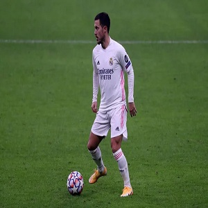
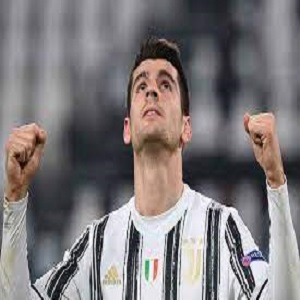
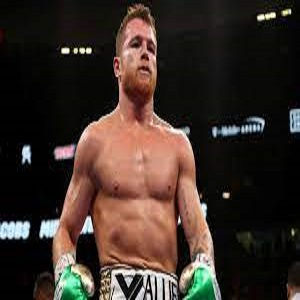
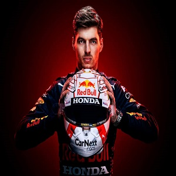

Khabib to Conor: "It is the same thing"
Despite the fact almost three years has passed since the pair clashed at UFC 229 - which remains the UFC’s highest-ever selling pay-per-view - the bad blood doesn’t seem to have settled one little bit.
Whilst the Irishman was a featherweight, Khabib had a healthy respect for him and the pair exchanged admiration over Twitter before meeting up and having a picture together.
That’s the man McGregor would target once he became UFC featherweight champion in December 2015 in his bid to become the UFC’s first-ever double champion.RDA would pull out of their matchup just weeks before and Nate Diaz would step in. We all know how that would dominate 2016.
At UFC 254, after his victory over Justin Gaethje, the 32-year-old took the entire MMA community by surprise when he announced his decision to retire from the sport with a 29-0 record (13-0 in UFC). Khabib said he did not want to continue without his late father, and that he made a promise to his mother that his fight against Justin would be last.
Latest News
| 
Eden Hazard injury update Hazard is the eldest of four children.He has three brothers, all of whom play football, including Thorgan, who joined him at Chelsea in 2012. |

Alvara Morata scores to Torino On 28 January 2015, Morata played the last 13 minutes of the Coppa Italia fixture against Parma, and scored the game's only goal at the Stadio Ennio Tardini to qualify for the semi-finals. |

Canelo Alvarez rejected GGG rematch Álvarez is known as an excellent counterpuncher, being able to exploit openings in his opponents' guards while avoiding punches with head and body movement. He is also known as a formidable body puncher. |

Max Verstappen became a leader Verstappen is the son of racing drivers Jos Verstappen, who also competed in Formula One, and Sophie Kumpen. |